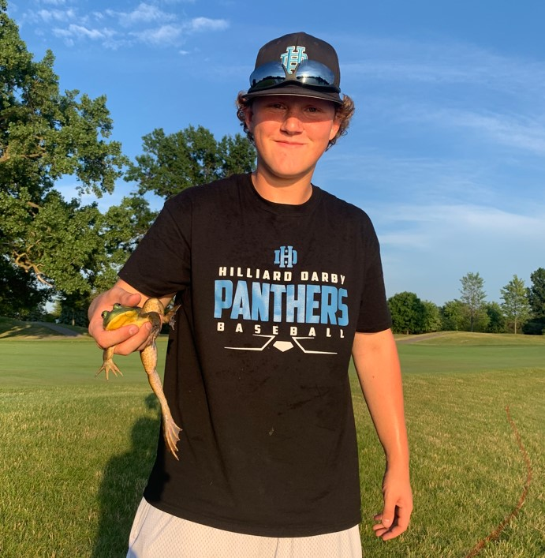
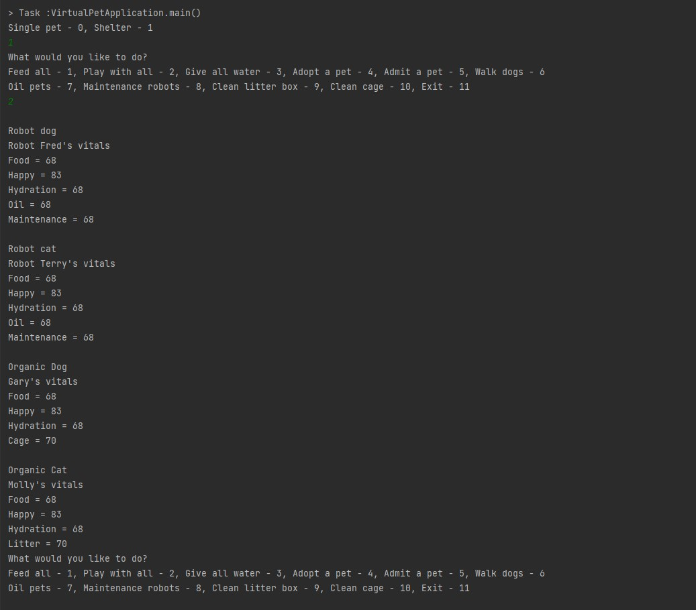
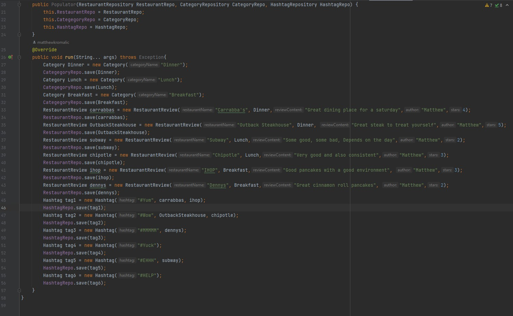

About me:
Bio:
My name is Matthew Kromalic. I grew up in Hilliard Ohio and have played baseball since I was 4 years old. I enjoy fishing, watching football and hockey.

(614)-549-2983 | matthewkromalic@gmail.com GitHub | linkedin
My profiles:
Skills:
Java • Spring Boot • Spring JPA • JavaScript • Spring MVC • HTML • CSS (Flexbox and Grid) • TDD • Agile (Scrum) • Object Oriented Programming (OOP) • JSON • REST APIs • Responsive Design / Mobile • Source Control / Git • Problem-solver • Good communication skills • Detail orientation • Patient
Projects:
Here are some of my projects: Virtual pet | Review API


Technology used:
Java • HTML • CSS • Visual Studio Code • IntelliJ